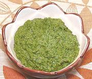

|
Beet Greens PestoCalifornia | ||||
| Makes: Effort: Sched: DoAhead: |
1-1/2 cups ** 1 day Yes |
A delicious pesto made of the greens from those bunches of fresh beets you bought. It can be used in any way Italian basil pesto is used, and it's way cheaper. | |||
|
|
6 1 1/4 2 1 1/2 1/3 1/2 |
oz cl c in T c c t |
Beet Greens (1) Garlic Parmesan Cheese (2) Rosemary sprig Lemon Juice Almonds, raw Olive Oil, ExtV Salt |
Yes, Italians do make pestos from greens other than basil (parsley, for instance), and do use nuts other than pine nuts (raw almonds, raw pistachios, etc.). Make - (1 day - 20 min work)
|